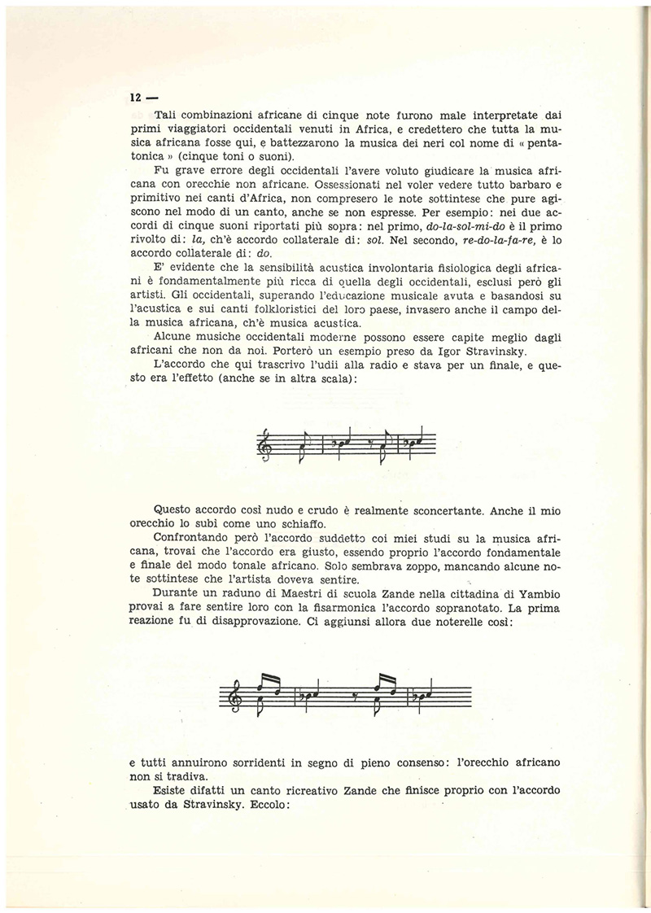

Musica
Scrivendo di p. Filiberto Giorgetti, p. S. Santandrea commentava: «In liturgia fu un vero rivoluzionario. Il Concilio Vaticano Il era ancora un sogno, ma padre Giorgetti ripeteva che la liturgia latina, trapiantata tale e quale in Africa, non aveva mordente sugli africani.
- 
Musica
Scrivendo di p. Filiberto Giorgetti, p. S. Santandrea commentava: «In liturgia fu un vero rivoluzionario. Il Concilio Vaticano Il era ancora un sogno, ma padre Giorgetti ripeteva che la liturgia latina, trapiantata tale e quale in Africa, non aveva mordente sugli africani. “Bisogna dare ampio spazio alla musica tradizionale, alla danza, alla rappresentazione drammatica”, insisteva. Ed eccolo comporre canti d'ogni genere, subito imparati e cantati a pieno coro da tutta l'assemblea. Passò quindi alla danza e al dramma musicale. I suoi balletti zande mandavano in visibilio neri e bianchi. Stupendi sono il suo ‘Natale’ e la sua ‘Via Crucis’.
In mano a P. Giorgetti, la musica divenne un potente mezzo d'evangelizzazione. Le sue composizioni (esprimenti lodi a Dio, alla Vergine, oppure verità fondamentali della fede cristiana) passavano di bocca in bocca. Li cantavano non solo i cattolici ma anche i protestanti e gli stessi pagani. Non era raro udirli nei balli tradizionali. Divennero, insomma, patrimonio degli Azande, che vi ritrovavano il loro linguaggio genuino e la loro vera musica…La sua specialità era l'etno-musica. Pubblicò Note di Musica Zande e Musica Africana. Le due opere esulano dalle solite illustrazioni ed elucubrazioni sull'ormai trito argomento: sono ben altra cosa. P. Giorgetti è andato al fondo della natura della musica zande e, in generale, dell'Africa Centrale, scoprendo quanto altri non avevano mai ‘visto’. Ciò gli è stato riconosciuto al Congresso Internazionale di Etno-Musicologia che si tenne a Lugano dal 7 al 10 settembre 1971, dove la sua esposizione sul soggetto - che contraddiceva certi principi generalmente acquisti - fu calorosamente applaudita. I suoi “avversari” dovettero riconoscere – alla prova dei fatti - che la sua tesi era probante».
In mano a P. Giorgetti, la musica divenne un potente mezzo d'evangelizzazione. Le sue composizioni (esprimenti lodi a Dio, alla Vergine, oppure verità fondamentali della fede cristiana) passavano di bocca in bocca. Li cantavano non solo i cattolici ma anche i protestanti e gli stessi pagani. Non era raro udirli nei balli tradizionali. Divennero, insomma, patrimonio degli Azande, che vi ritrovavano il loro linguaggio genuino e la loro vera musica…La sua specialità era l'etno-musica. Pubblicò Note di Musica Zande e Musica Africana. Le due opere esulano dalle solite illustrazioni ed elucubrazioni sull'ormai trito argomento: sono ben altra cosa. P. Giorgetti è andato al fondo della natura della musica zande e, in generale, dell'Africa Centrale, scoprendo quanto altri non avevano mai ‘visto’. Ciò gli è stato riconosciuto al Congresso Internazionale di Etno-Musicologia che si tenne a Lugano dal 7 al 10 settembre 1971, dove la sua esposizione sul soggetto - che contraddiceva certi principi generalmente acquisti - fu calorosamente applaudita. I suoi “avversari” dovettero riconoscere – alla prova dei fatti - che la sua tesi era probante».